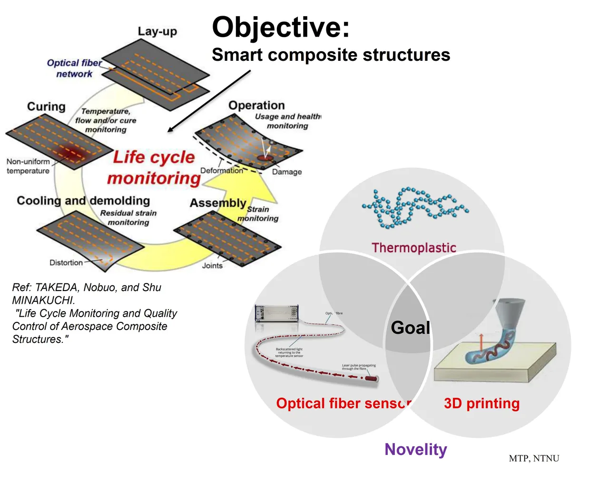
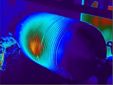
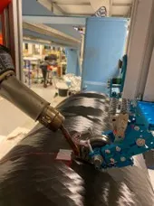
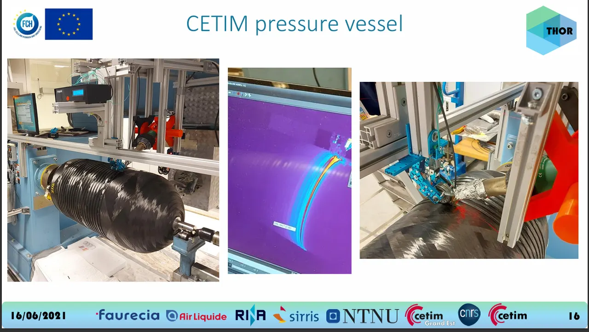
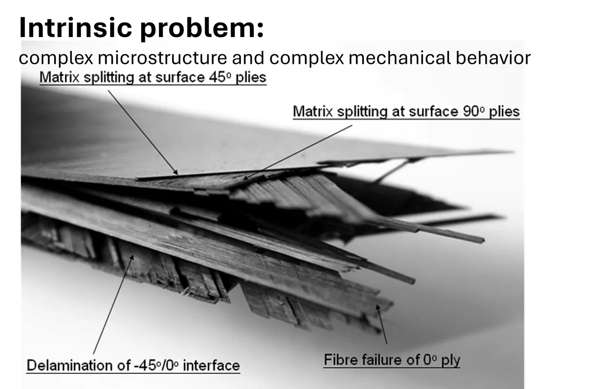
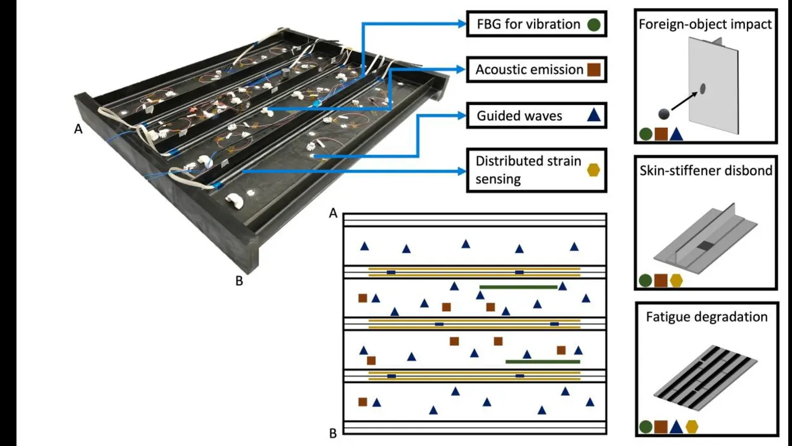
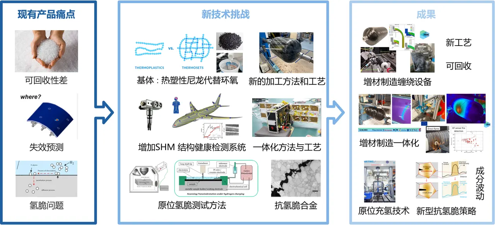

BSc, Materials Science and Engineering
China University of Petroleum, Beijing
Supervisor: Ying Zhang.
From materials science to composite manufacturing and structural health monitoring.
Hover over a date to explore
China University of Petroleum, Beijing
Supervisor: Ying Zhang.
Harbin Institute of Technology
Supervisor: Shangli Dong.
Norwegian University of Science and Technology
Supervisors: Kaspar Lasn and Andreas Echtermeyer.







